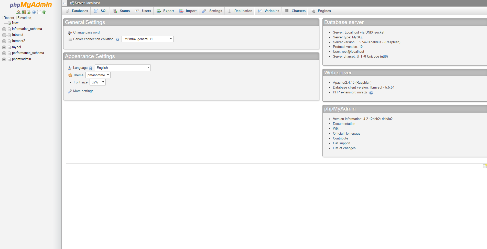
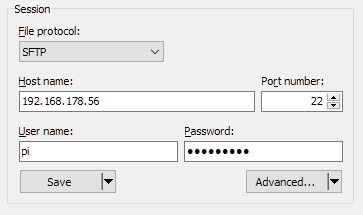
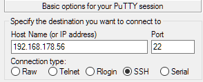
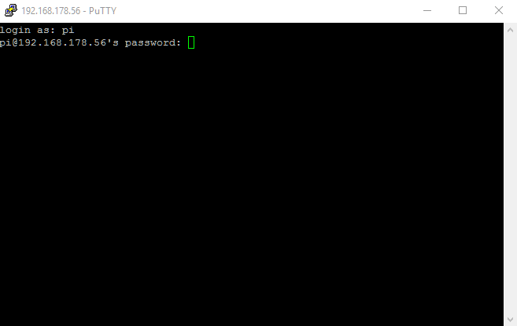
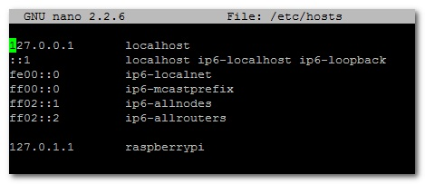

Intranet Documentation 0.1.0
This is the only official Documentation for the Intranet Project. You can check each version by simply adding the version number in the URL (only works for betas and releases). For Example: /v/0.1.0/ There you can find the changelog for each version, too.
This documentation will show you how to get started with the basic setup and what is important where you have to watch out during setup.
So let's get started!
There are some things you want to pay attention to. First let's clear out how out version system works: e.g. v0.0.4 This is an alpha release. We tend to keep up the repository up to date, as good as possible to clear out and issues with merging. In the alpha release we do not guarantee any functionality or support for any versions. If we take for example our version v0.0.2, you can see that the whole PHP/MySQL part is coded with the mysql extensions for PHP. That is no longer supported in PHP6, so our scripts won't work on the following PHP versions. In v.0.0.8 we started moving towards MySQLi, which will stay supported at least for the next PHP version.
Let's take another version number: v0.1.2. All that means is that we got is the fact, that the last Beta release is two alphas away. If you want to be sure about your version support, then you should use one of the releases. If you do not care that much and believe, that the Beta builds are good enough, then you can go with those.
And we got another version format to check out: v1.4.32. That is pretty simple as well. That basically means, that we are 4 Betas and 32 Alphas past the last release. In a release we tested and experienced the features so we can guarantee maximum safety and reliability.
So to keep it short: The first digit is the official release, where we can say that everything works fine. The second is the Beta. Here we don't exactly know if everything is working correctly, so we are testing it first. And the third one is basically just interesting if you're a developer yourself.
Hardware
You need a webserver to run the Intranet on it. So therefore you need a small computer or a virtuelle maschine on your PC that is always powered on when you need your Intranet. We developed the Project with the RaspberryPi as a Webserver in mind. In the following steps we will show you how to setup your Pi. We won't go over the hardware part, since there are a lot of good tutorials out there. What Operating System do I need? It really doesn't matter what you are using, but in our Tutorial we'll show you how to configure Rasbian, a Debian version for the Raspberry. As long as you have access to the console, you should be allright. You can install more than the Intranet on the Pi! It is NOT fully occupied by it.
So let's hop right in:
You now should have a running Pi with console access. So let's start installing some software. But wait. If you want to skip this process, you can let our installation script do it.
If you want to use it, we'll show you now how you can start it. Basiclly after that, you are good to go. You just have to run a basic command in the command line and follow the instructions:
get http://IntranetProject.net/setup/script/script.sh
And that's all you need to do. Now you can enter the URL of your Pi in your Browsers URL-Bar and let the Database Setup script run everything. Click here if you want to know how to change the hostname of your Pi (different name in Network)
Click here if you want to install manually.
Software
If you have your Hardware Setup and all the needed packages installed, you can start configuring your Intranet. Therefore you need to edit the following file: php/config.php. If you don't have visuell acces to your Pi (Remote Desktop) and only SSH connection, you can use "nano" to edit the files. Just type the following in your console and edit your configuration:
sudo nano /var/www/html/php/config.php
edit the lines you want: If you want to change the language, edit the line for that. Important! You want to have a Database allready created! If you don't have that done, follow here:
Create the Database:
In your Browser, type "<hostname>/phpmyadmin". Login with your credentials and you should be welcomed with this screen:

In the left Navbar click on "New" and create a new Database. Now you can go back to your config.php and insert the MySQL Data. After that visit the Pi in your Browser and let the setup script set the tables up.
FTP
You can use the FTP Protocol to access your Pi via a FTP Client. You can use FilleZilla or WinSCP to connect to your Pi. In the following, we'll use WinSCP since it has a build in edit funtion. Start the Programm and enter the Username "pi" and your password (If you didn't change it, it'll be "raspberry").

Navigate to the folder where your Intranet is stored. By default it's in the /var/www/html folder. Now you can open and edit all important files. This is going to be very nice to have, if you want to install new modules.
SSH
If you need Console Access to your Pi, you can use SSH. In the following step you'll learn how to active SSH and connect to it from your Pc. For that you need a Software called Putty, which you can download here. Enter your IP and press "Enter":

Now, enter "pi" as the user and enter your Password (default password is "raspberry" (you won't be able to see it, while typing)):

Important: If you cannot connect immediately, you have to connect to your Pi with a Monitor and Mouse and Keyboard. Login and open up the Terminal. Enter: sudo raspi-config" and search for the option "ssh" and be sure it is actived.
Change Hostname
Since your Router has a DNS Server build in, you can change the IP Adress of your Pi to a static name. It's pretty simple.
sudo nano /etc/hosts
The file will look something like this:

You only need to change the last line: Replace "raspberrypi" with the name you want your Pi to be shown in the Network. Use CTRL + X to exit the editor.
After that, open the file hostname:
sudo nano /etc/hostname
Again, change "raspberrypi" to your desired name. It should be the same as in the /etc/hosts file.
Now, you are ready to restart the Pi. Commit the changes to the system by typing sudo /etc/init.d/hostname.sh and after that sudo reboot in your console.
Back online, you should see (and access) the Pi over the name, you just set. If it doesn't work, check on your Routers Interface if the name was applied.
Manual Installation
If you don't strust our script (you can check the source here), you can run each step by yourself. To guide you through this process, we collected all commands here.
Start by updating and upgrading your Pi's software with the following two commands:
apt-get update
apt-get upgrade
After that, you need to install the necessary software (apache2, php5 and mysql5). Run the following commands:
apt-get install apache2 apache2-doc apache2-utils
apt-get install libapache2-mod-php5 php5 php-pear php5-xcache
apt-get install php5-mysql
apt-get install mysql-server mysql-client
During the process you'll be asked to give a password. You need to remember that. Now, that everything is installed correctly we can continue by putting our main Intranet in the folder of the apache Webserver. Connect of FTP to your Pi and download the version you want from our GitHub Release Page. Navigate to the /var/www/ folder and delete the html folder. Unzip the downloaded package and rename the folder to "html". Now you can move it onto your Pi.